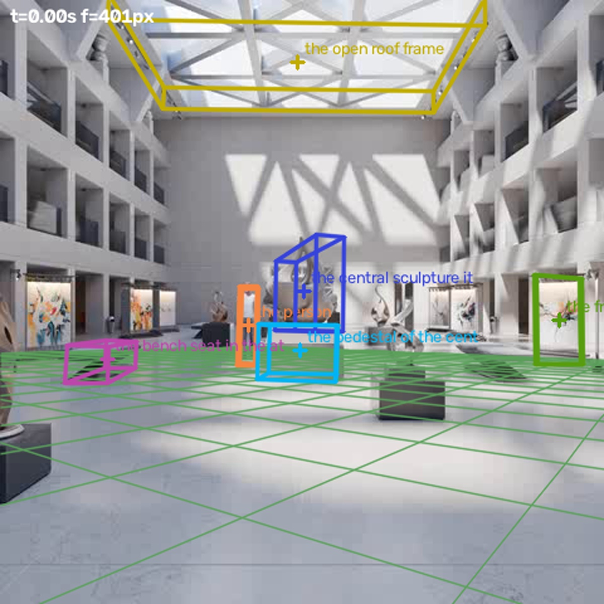
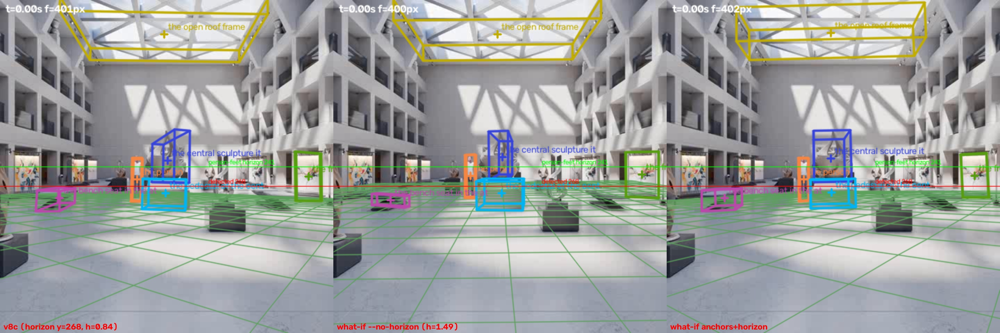

← 视频与问题 · 评估员逐视频报告（由 outputs/eval/*.md 生成）
主因层：解析（depth_info 5 行丢 3 行，三个结构物的距离锚点全没用上）+ 深度/尺度（逆深度仿射对齐只靠 9.5–12.3 m 的锚点，外推到远处时被压缩，屋顶净高 9.24）+ 平面（线段地平线 y=268，人脚给出的是 241）+ 置信度（病态尺寸 conf 也有 0.70）+ 跟踪分界（雕塑和底座的分界线选错了） 根因：本视频是静止相机，人从 12.3 m 走到约 8 m，地面几何本身可以精确求出（相机高 1.37 m，地平线 y=240.8，f≈394，100 帧残差 0.66 px）。但 scene_fit 用的是线段检测出的错误地平线；底座、雕塑、展板三个距离锚点因为 parse_depth_info 的正则没写全全部丢了（scene_fit._anchors_for 还会丢掉不带时刻的锚点）；远处深度靠两个近距离锚点做仿射外推，1/b 把深度上限压在 20.8 m（墙实际在 31–33 m），所以屋顶低了 3.7 m。鸟在视频里看不到，这题真值存疑。
simulation_0015 评估报告（评估员，2026-10-24）
数据来源：逐题结果 outputs/val_mh3_routed.csv（0.7230）和 val_defaults_routed.csv；3D 场景 outputs/scene_fit_eval/c_support_v8c（同时对照了 v8b 和 v8a）；跟踪 tracks / tracks_qwen / tracks_v9；在场性 objects_presence_v3。 注意：val_mh3_routed.csv 的 fit 列和 c_support_v8a 逐值一致（屋顶 0.165 / conf 0.0006，鸟 1.209 / conf 0.576，展板宽 1.640），不是 v8c。coordinator 需要确认 mh3 路由时传的是哪个 --fit 目录。
题目表（mh3）
| # | 题 | 答案 | 几何 | 拟合 v8c（conf） | Qwen | 最终 | MRA | 主因层 |
|---|---|---|---|---|---|---|---|---|
| q0 | 雕塑本体高 | 1.97 | 1.81 | 1.52（0.66） | 1.15 | 1.52 fit | 0.7 | 跟踪分界 + 深度 extent 被背景污染；路由取了较差的拟合值（几何 0.9） |
| q1 | 底座宽 | 1.46 | 1.15（width-unobs） | 1.32（0.42） | 1.2 | 1.32 fit | 0.9 | 平面/锚点（修好以后 1.41–1.47） |
| q2 | 底座高 | 0.60 | 1.15 | 0.94（0.70） | 1.15 | 0.94 fit | 0.4 | 跟踪分界（底座框把雕塑基座的浅色板也包进去了） |
| q3 | 展板宽 | 1.58 | 1.07 | 1.64（0.19，bound） | 1.2 | 1.07 geo | 0.6 | 框右侧立柱被截掉；拟合值碰巧对 |
| q4 | 展板高 | 2.00 | 1.68 | 2.46（0.65） | 1.7 | 2.45 fit | 0.7 | 解析：锚点 11.874 丢失，展板被放到 Z=14.2 |
| q5 | 长椅高 | 0.45 | 0.87 | 0.56（0.70） | 0.45 | 0.56 fit | 0.7 | 拟合病态（斜放长椅，没有 yaw） |
| q6 | 长椅宽 | 0.706 | 0.87 | 0.60（0.70） | 1.8 | 0.60 fit | 0.8 | 同上 |
| q7 | 长椅长 | 2.23 | 1.66 | 3.02（0.70） | 1.8 | 3.02 fit | 0.6 | 同上；路由取了较差的拟合值（几何 0.7） |
| q8 | 地面到屋顶下沿净高 | 12.9 | 3.0（回退） | 9.24（0.245） | 10 | 10 vlm | 0.7 | 深度远处压缩 |
| q9 | 屋顶框架厚度 | 0.72 | 2.34（截断框） | 0.82（0.245） | 2.5 | 2.34 geo | 0.0 | 几何：截断框的高度被当成厚度，conf=1.0 |
| q10 | 鸟的平均速度 | 1.3 | 1.40（跟错） | absent | – | 1.40 geo | 0.9 | 真值存疑；几何值是错的轨迹碰巧得分 |
均值 7.0/11 = 0.636。
画面事实（叠加图）
- 帧网格：/tmp/claude-1017/-data-yumenghe-QuantiPhy/823507c7-069c-4584-aec0-69d0a1b126a7/scratchpad/eval_0015/frames_grid.jpg；三种跟踪框（t=0/49/99）：/tmp/claude-1017/-data-yumenghe-QuantiPhy/823507c7-069c-4584-aec0-69d0a1b126a7/scratchpad/eval_0015/tracks_t0.jpg、tracks_t49.jpg、tracks_t99.jpg
- v8c 叠加图：
simulation_0015/overlay_v8c_t0.0.jpg
… t3.0.jpg；v8c、--no-horizon、补锚点三组对比：simulation_0015/overlay_compare_t0.jpg
（绿线是人脚回归出的地平线 241，红线是检测出的 268） - 放大图：/tmp/claude-1017/-data-yumenghe-QuantiPhy/823507c7-069c-4584-aec0-69d0a1b126a7/scratchpad/eval_0015/zoom_pedestal.jpg、zoom_backwall.jpg、zoom_bench.jpg、zoom_panel.jpg；人以外的运动图：/tmp/claude-1017/-data-yumenghe-QuantiPhy/823507c7-069c-4584-aec0-69d0a1b126a7/scratchpad/eval_0015/motion_outside_person.png
- 相机静止，480×480，33 fps，100 帧。人框 [188,225,206,285]→[162,219,190,309]。用"脚底 y = y_h + (h/1.87)·框高"做线性回归：y_h=240.8、h=1.37 m，残差 0.66 px。f 从锚点得到：60 px·12.26/1.87=393，68 px·10.97/1.87=399。
- 框：雕塑 [209,189,268,260]、底座 [207,258,274,302]、长椅 [47,271,112,305]（左侧那张）、展板（tracks / v9）[422,219,466,285]，都对准了物体。tracks_qwen 把展板换成了左后方的小板 [125,230,141,264]，换错了。屋顶 [100,0,380,92]，上沿被画面截断。鸟的框在 tracks / v9 里是左后方小雕塑 [167,231,181,256]，在 qwen 里是右侧画作，两个都不是鸟。
- 底座分两层：下层深灰块正面 y 273–301（28 px，在 Z≈9.0 处约 0.62 m），宽 65 px（约 1.46 m）；上面是一块浅色板 y 258–273。如果浅色板是顶面，它的透视比例（宽 55/62）和 15 px 的高度互相矛盾，所以它是一层竖直的板。真值自洽：底座 0.6 是下层，雕塑 1.97 = 189→273 共 84 px，在 9.46 m 处约 2.0 m；两者相加 2.57，画面总高 189→301 合 2.59。
- 背景墙和地面交线在 y≈257.5，墙顶（屋顶下沿）在 y≈92.5。净高 = h·(y_base−y_top)/(y_base−y_h) = 1.37·165/16.7 ≈ 13.5 m（交线读数差 ±1 px 时结果在 12.6–14.4），所以真值 12.9 可信。
- 全视频除人以外，帧差 >25 的像素只有 8 个（压缩噪声），确实没有鸟。


根因结论
- depth_info 解析丢锚点（解析层，不在 in_progress 里）。parse_depth_info 的正则
distance_([a-zA-Z0-9_]+?)_camera解析本视频只得到 {human}，以下三行都丢了：distance_the_pedestal_of_the_central _sculpture_and_camera（含空格）、distance_the centeral_sculpture_camera（含空格且拼写错误）、distance_the_nearest_freestanding_art_display_panel = 11.874 m（没有 _camera）。另外 scene_fit._anchors_for 只返回带时刻的锚点（if t is not None），即使解析成功，静止物体的锚点在逐物体拟合里也会被丢掉。日志里所有结构物 anchors=0。展板被放在 Z0=14.2 m（锚点是 11.87），高度 2.46。 - 远处深度被压缩（深度/尺度层；in_progress 只记了现象"屋顶 12.9"，这里是根因）。对齐结果 a=4.43e-4、b=0.0481，深度上限 1/b=20.8 m。背景墙对齐后的深度是 19.5 m，地面几何给出 31–33 m；屋顶远边对齐后 19.4 m，换算高度约 8.9，和输出的 9.24 吻合。所以误差不是 p15 分位数造成的，是深度外推的问题。补上 3 个锚点以后 b=0.071，上限降到 14 m，屋顶反而变成 6.84（what-if 已验证），因为锚点全集中在 9.5–12.3 m，补得再多也约束不了远处。
- 地平线/平面错误，尺寸 conf 不反映病态（平面层 + 置信度层）。线段检测出 vp=(−319,269)、(794,267)，得到 y=268，相机高 0.84、俯仰 3.2°；而人脚 100 帧回归的结果是 241 和 1.37。不过平面修对以后总分并不升（见 what-if），因为长椅三个尺寸跟着平面大幅摆动，conf 却始终是 0.70，路由按 0.6 阈值把 q0 / q7 较差的拟合值选了进来。
what-if（只读实验，用猴子补丁跑 scene_fit，产物在 /tmp/claude-1017/-data-yumenghe-QuantiPhy/823507c7-069c-4584-aec0-69d0a1b126a7/scratchpad/eval_0015/exp/）
| 配置 | 平面 | q0 | q1 | q2 | q3 | q4 | q5 | q6 | q7 | q8 | q9 | 拟合均值（已答） |
|---|---|---|---|---|---|---|---|---|---|---|---|---|
| v8c | h0.84 / 268 | 1.52 | 1.32 | 0.94 | 1.64 | 2.46 | 0.56 | 0.60 | 3.02 | 9.24 | 0.82 | 0.730 |
| --no-horizon | h1.49 | 1.38 | 1.47 | 0.92 | 1.21 | 1.88 | 0.41 | 0.23 | 1.55 | 8.63 | 1.06 | 0.660 |
| 补锚点 + 地平线 | h0.82 | 1.57 | 1.41 | 0.89 | 0.98 | 1.84 | 0.65 | 0.97 | 2.09 | 6.84 | 1.51 | 0.620 |
| 补锚点 + --no-horizon | h1.98 | 1.51 | 1.25 | 0.88 | 1.02 | 1.75 | 0.72 | 0.22 | 1.40 | 6.40 | 1.64 | 0.510 |
结论：锚点和平面修好后，展板高、底座宽稳定变好；长椅 L/W/H 在不同配置间差到 3 倍（病态）；屋顶在所有配置下都偏低，dense depth 这条路本身走不通。runner 脚本：/tmp/claude-1017/-data-yumenghe-QuantiPhy/823507c7-069c-4584-aec0-69d0a1b126a7/scratchpad/eval_0015/exp/run_fit.py。
逐条问题（按影响面排序）
- depth_info 解析鲁棒性 + 静止锚点。验证集只有本视频受影响；测试集有 20 个视频行解析不全，问题包括：单位写成 s（captured_0029/0030/0035a/b 全变体，
distance_ball_camera=0.901s）、缺 _camera（simulation_0015/0017/0019 展板）、名字含空格（0015/0017 底座、simulation_0188 卡车）、写成distance_camera_B1sign（simulation_0150）。静止锚点被丢掉还影响 captured_0034as（pencil bag / soccer ball，anchors=0，答 4.97/6.7、14.5/17.5）和 simulation_0009（pier / stairs）。建议：parse_depth_info 改成"distance_ + 名字（下划线/空格都算）+ 可选 _and / _camera + = 数值 + 单位 m|s 都接受"，并能识别 camera_ 前置；名字匹配去掉 the/of/and/nearest 等修饰词，token 允许编辑距离匹配（centeral→central）；_anchors_for 对 t=None 返回全时段（静止物体）锚点。验收：验证集和测试集每行 depth_info 都解析出来并匹配到物体；本视频展板 Z0≈11.9、H≈1.8–1.9；captured_0034as 的 pencil bag / soccer ball anchors≥1。负责人：qp-tools（parse）+ qp-code-3d（_anchors_for）。 - overhead 净高不用 dense depth 外推，改用地面几何。建议：fit_overhead 先找结构下方墙和地面的交线行 y_base，用平面求出 Z，再取同一竖直墙面上屋顶下沿行 y_top，算 H=h·(y_base−y_top)/(y_base−y_h)。或者把地面像素按平面求出的度量深度加进 (a,b) 对齐，让对齐覆盖近到远的范围。加上自检：对齐后的 1/b 小于场景里地面最远点的平面深度时，conf 置为 0。验收：本视频净高 12–14 m；dense depth 在地面像素上的深度与平面深度之比在 0.8–1.25 之间。负责人：qp-code-3d。
- 地平线检测要和"走动的人/物体脚底回归"互相校验。行人身高恒定，100 帧的脚底 y 和框高就能定出 y_h 和 h（本视频残差 0.66 px）。建议：有 person 先验或者人长时间可见时，把这一结果作为地平线投票，与线段地平线相差超过 10 px 就拒用线段结果（类似 hgate）。验收：本视频 h≈1.37±0.1、俯仰 <1°。负责人：qp-code-3d。
- 尺寸 conf 加入稳定性项。现在 conf 主要看 rms_rel 和 dim_source，长椅三个尺寸 rms 很小，conf 0.70，但换一个平面就变 3 倍。建议：在 ±1 个平面/焦距假设（检测地平线 vs 无地平线，f±5%）下重算尺寸，把相对离散度并入 conf，离散度 >25% 时 conf<0.5，这样路由回落到几何。验收：本视频 q0 / q7 走几何（0.9 / 0.7），全验证集 S3 不变或更好。负责人：qp-code-3d（路由阈值由 qp-tools 配合）。
- depth_extent 被背景污染。它取框内 60% 区域的 p85−p15，镂空雕塑透出 19 m 的后墙，得到 5.27 m，变成 L=3.15 的下界，又把 H 压到 1.52。建议：改用掩码像素（extents2d 或 SAM2 掩码），深度分布双峰时只取近峰；extent 大于横向尺寸 2 倍时视为污染，不作下界。验收：本视频雕塑 extent <1.5 m。负责人：qp-code-3d。
- 几何流水线对贴边截断框直接给尺寸，而且 conf=1.0（q9 屋顶厚度 2.34，MRA 0）。框 y1=0，上沿被截断，scene_fit 已经知道这一点（truncated sides: top）。建议：几何流水线所测轴向的框边贴画面边界时，标 unobservable，conf≤0.3；路由对这种题优先用拟合值，没有拟合值再用 Qwen。负责人：几何 solve（qp-code-3d）+ route（qp-tools）。
- 叠放物体的分界（雕塑和底座，q0/q2 都差约 0.35 m）。本题有 square base 线索：真值里的底座是宽 1.46 的方块下层。通用办法只能做到：part_of / on 关系的两个物体框相邻时，在交界带里找最强的水平边缘，并把"底座宽≈底座高的几倍"这类形状一致性检查交给 Qwen 复核分界。优先级低，有歧义，不建议在这上面花大力气。负责人：qp-tools。
- 展板框截掉了右侧立柱（框右沿 466，实际约 476）。宽度只会被低估，影响 0.1 m 量级。tracks_qwen 把展板换成了错误的远处小板，"Qwen 复核换框"在这里起了反作用（iou 0 时直接替换），建议替换前先检查新旧框的深度和锚点距离是否一致（锚点修好以后才能做）。负责人：qp-tools。
真值存疑
- q10 鸟速 1.3：全视频没有鸟，帧差图里人以外没有运动；在场性 v3 判 absent 是对的。巧的是 1.3 ≈ 人 0–1 s 的径向速度（12.26→10.97，约 1.29 m/s）。几何值 1.40 来自"鸟"轨迹，那其实是左后方的静止小雕塑，被路过的人遮挡后框收缩，得分 0.9 纯属巧合，不应据此保留这条错误轨迹。
- 其他题真值自洽：雕塑+底座 2.57 vs 画面 2.59；展板高 2.0 vs 画面约 2.0–2.1；净高 12.9 vs 地面几何 13.5±0.9。
- 另外注意 depth_info 的距离约定：右侧展板的平面深度 Z≈12.3（由地面推出）比欧氏距离 13.8 更接近 11.874，说明这个模拟场景的 distance 可能是沿光轴的 Z。修锚点时别默认按欧氏距离处理，可以两种都试，用残差选。